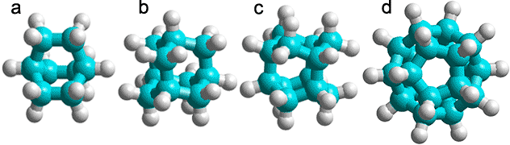
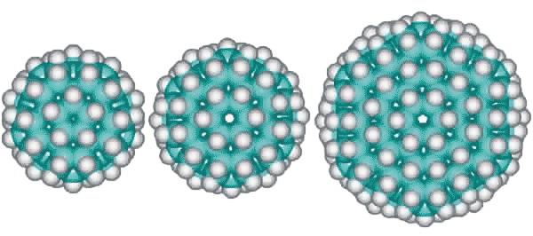

Some cyclic alkanes have been synthesized that correspond to the water clustering in the icosahedral water clusters.
Polycyclic alkanes

a) C8H14, bicyclo[2,2,2]octane; b) C10H16 adamantane (tricyclo[3.3.1.13,7]decane); c) C12H18, iceane (wurtzitane, tetracyclo[5.3.1.12,604,9] dodecane) [1843]; d) C20H20, dodecahedrane (fullerane-C20-Ih, undecacyclo[9.9.0.02,9.03,7.04,20.05,18.06,16.08,15.010,14.012,19.013,17] icosane) [1844].
C280H120 structure
Dodecahedrane
The basic expanded network structure of the icosahedral water cluster is mechanically strong, having close to tetrahedrally-positioned bonds, and the central dodecahedron (see left) has been synthesized as an alkane. The complete cluster could be found in the, as yet unsynthesized, alkane C280H120, made up of twenty C14 tetrahedral sub-structures. Such molecules are also known as 'nanodiamonds'. The stability and electronic spectra of the icosahedral carbon nanoparticles C20H20, C100H60 and C280H120 have been calculated [1845]. It was calculated that hydrogenation stabilized the structures that otherwise preferred an 'onion' like (Russian doll) layered carbon shell structure [1846]. The first discussion of similar icosahedral carbon clusters was in 1993 [1847].
Using the AMBER force-field, the average C-C and C-H bond lengths and bond angles for C280H120were 1.533 Å (SD 0.014 Å), 1.091 Å (SD 0.0001 Å), and 109.46° (SD 1.47°), respectively.
Interactive structures are given (Jmol).
C70H60 structure
There could also be the quarter-structure C70H60 (Jmol), shown left made up of five C14 tetrahedral sub-structures (the dihedral angle at each edge of a tetrahedron is 70.529°, leaving this structure just 7.356° (2%) short of that required for perfect tetrahedra forming a circle). Using the AMBER force-field, the average C-C and C-H bond lengths and bond angles of C70H60 were 1.534 Å (SD 0.0026 Å), 1.091 Å (SD 0.0002 Å), and 109.47° (SD 0.68°) respectively.
Other derivative fulleranes are also possible such as (from the left below) C100H60 (20 ˣ C5H3 units) based on the inner cluster with a central carbon dodecahedron, C120H72 (24 ˣ C5H3 units) based on the inner cluster with a central carbon tetrakaidecahedron (51262) and C336H144 (24 ˣ C14H6 units) based on the complete tetrakaidecahedron cluster.
C100H60, C120H72, and C336H144 alternative fulleranes

Home | Site Index | Fullerene solutions | LSBU | Top
This page was established in 2002 and last updated by Martin Chaplin on 3 August, 2021